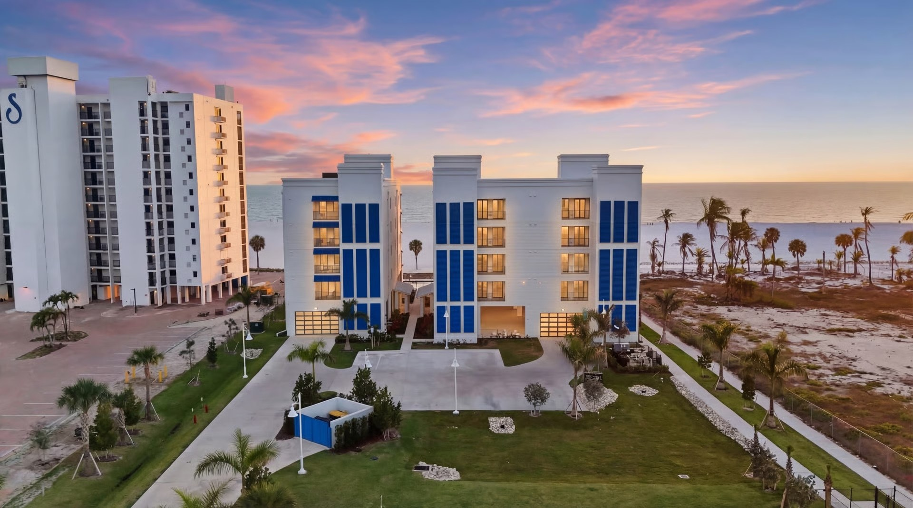

Luxury Beachfront · Multifamily
Gulfside Twelve
Fort Myers Beach, FL · Gulf of Mexico

Fort Myers Beach, FL · Gulf of Mexico
Gulfside Twelve is a five-story luxury beachfront condominium on Fort Myers Beach - twelve whole-floor residences directly on the Gulf of Mexico, built by New Age Development on Lee County's most demanding stretch of coastline.
This is direct Gulf exposure. Every window and every door on this building faces open water and must perform to the highest impact resistance ratings Florida code requires. There is no margin for error on a beachfront tower that will face hurricane exposure for its entire life.
ACG supplied and installed the complete PGT impact window and door package across all five floors. Large-format fixed glazing on every Gulf-facing elevation. Impact-rated sliding glass doors opening to every private balcony. Storefront glazing at the ground-floor lobby and amenity level. Clean dark aluminum frames. High-performance glass. The impact resistance to stand up to whatever the Gulf sends.
"Fort Myers Beach was devastated by Hurricane Ian in 2022. Gulfside Twelve is proof that a luxury coastal building can be rebuilt to out-perform what stood before. The glazing package on this tower is not just a spec. It is the point."
In September 2022, Hurricane Ian tore through Fort Myers Beach and left the community shattered. New Age Development built Gulfside Twelve as part of the recovery - a premium product designed to prove that Fort Myers Beach can come back stronger.
ACG's PGT package on this building is not a specification. It is a statement about what resilient coastal construction looks like when every opening has to hold up. Twelve residences. One Gulf. Hurricane-rated, owner-installed, backed end-to-end.
Hurricane Ian leveled large portions of Fort Myers Beach in 2022. Gulfside Twelve - the 12-unit beachfront rebuild on Estero Boulevard - was designed to answer that damage with a building envelope that will not blink at the next storm.
The brief from New Age Development was uncompromising: hit the post-Ian delivery schedule, stage 12 identical units without disrupting the trade stack, and produce an oceanfront glass-wall experience that justifies the price per square foot of Fort Myers Beach.
ACG delivered the complete PGT impact-rated glazing package - oversized sliding glass doors in every residence, impact window walls on Gulf-facing elevations, interior glass door systems, and the lobby/amenity storefront. Every opening was installed to Florida Product Approval and Lee County wind-borne debris requirements. Lee County is not in the HVHZ.
ACG hit every install window on the trade-stack schedule and turned the building over to commissioning on time. The finished residences read the way the renderings promised - a continuous plane of glass between the interior and the Gulf.
Beachfront, wind-borne debris region, high-rise residential - ACG specifies and installs the impact package that performs where it counts. Send your plans and get a scope in 48 hours.
Send Us Plans